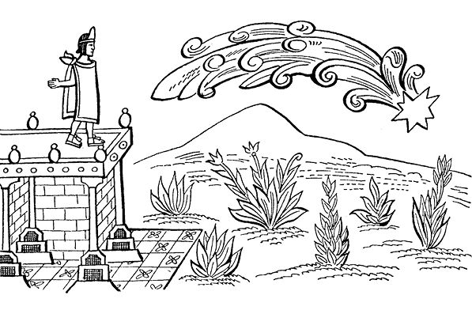
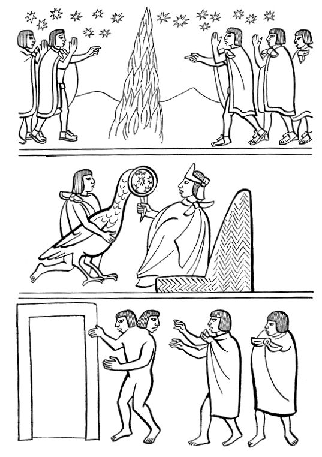
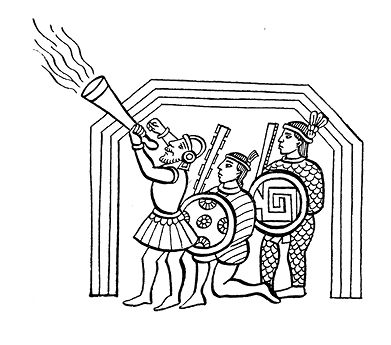

阿兹特克帝国驻华使馆
目录 |
第一章 西班牙人到来的先兆导 言
本书前十三章所介绍的印第安文本包括了从西班牙人即将来到墨西哥湾海岸之前到墨西哥-特诺奇蒂特兰落入征服者之手的最后一幕为止，这期间所发生的事情。十四、十五两章以结论的形式介绍了特拉特洛尔克无名作者1528年关于征服的记述，以及一些关于征服的著名的“诺库伊卡特尔”，即“挽歌”。 我们对征服的史实和行为按编年顺序选择了这些篇章，篇章与篇章之间有时叙述有所不同，且有矛盾。但是我们无意在这里解决这些历史问题，记述城市和其他地方的纳瓦人如何看待和解释这些史实的篇章所反映的人文价值要比历史事实更引人入胜。 本章摘录了卡里巴依博士直接从纳瓦特尔语原文译出、来自萨阿贡实情提供者提供的片段。这些片段被列入《佛罗伦萨抄本》第12卷的开始部分。还有一小部分来自导言中提到的卡马戈撰写的《特拉斯卡拉历史》。卡马戈与特拉斯卡拉的贵族有亲缘关系，他的作品反映了科尔特斯的盟友特拉斯卡拉人的观点。两个文献也有非常相似的地方，都记述了西班牙人到达之前十来年间出现的一连串奇怪的不祥之兆，墨西卡人尤其是蒙泰古祖玛都曾见过。这里首先摘录《佛罗伦萨抄本》中萨阿贡实情提供者所叙述的片段，接着是《特拉斯卡拉历史》的作者所提供的记述。
萨阿贡实情提供者记述的凶兆
第一个凶兆 在西班牙人到来的前10年，天空首次出现凶兆。它既像火舌又像火焰，一会儿又像黎明的光线。它不断向天上地下喷射大火。 火焰底部很宽，但顶部很细，时而悬在半空，时而直射天空中心。 人们发现它出现在午夜的东方，黎明时它还没有消失，直到太阳出来才将它驱散。在整整一年的时间里异象每天都出现，这一幕出现在第12-房屋年1。 时兆引起了骚乱：人们吓得捂住自己的嘴巴，惊恐不安，议论纷纷。  第二个凶兆 第二个凶兆就发生在墨西哥城：维奇洛波奇特利2的府邸，这个被称作“特拉卡特坎”3的神圣地方自燃起来，大火吞噬了它；可能没有任何纵火者，它是兀自燃烧起来的。 火柱突兀而起，从府邸内部蹿出火苗，蹿出火舌，蹿出熊熊大火。 大火很快吞灭了房架。与此同时，一个声音高叫道：“墨西哥人，你们快来呀！火能熄灭，快把你们的水罐带来！……” 但是，当人们为了灭火而向火柱泼水时，火势变得更大。没人能扑灭这么大的火，它把一切都吞噬了。
第三个凶兆 一道巨光降临在祖木尔克4神庙上。神庙是用茅草修建的，所以被称为“毛茸茸的神庙”。被巨光劈倒的庙叫西乌特库特利5庙。其实雨下得并不大，只是蒙蒙细雨。凶兆出现后有人这样解释：“这是太阳神降下的报应！”当时听不到一声雷响。
第四个凶兆 太阳还没落山，天上就降下大火。它由三个部分组成，从太阳落山的方向升起，一直向太阳升起的地方而去。它的尾部很长，像火炭一样洒下大量火星，火星飞到很远的地方。当人们看见它的时候，议论纷纷，声如洪钟。6
第五个凶兆 飓风骤起，引起湖水沸腾，它在怒吼，在翻滚，就好像要把一切撕成碎块。翻滚的动力来自遥远的地方，它掀起高高的大浪。大浪滚至墙基，冲倒房屋，房屋被洪水淹没。此事就发生在我们旁边的湖泊上。7
第六个凶兆 人们经常听到一个女人的哭声，她总是在夜晚叫喊。她叫道：“我的孩子们，我们应该远远地离开这里！”有时她还叫道：“我的孩子们，我该把你们带到什么地方去呢？”
第七个凶兆 生活在水边的人们时常撒网，常有所获。一次，他们捕到一只像鹤一样的灰色大鸟。他们把这只大鹤带到黑屋（学习巫术的房子）献给蒙泰古祖玛。 已是中午时分，太阳当头。鸟头上有一面像镜子的东西，像纺锤一样呈螺旋形，贴在鸟的头部中间。 镜子里可以看到天空，能看到马斯特雷霍斯星座的各个行星。蒙泰古祖玛说这些星星是最大的不祥之兆。 但是当他第二次看这只鸟头时，镜子远处匆匆走来一群人，个个穿着华丽的服装。他们相互推推搡搡，争吵不休。这些人骑着一些像大鹿一样的动物前行。 这时，蒙泰古祖玛叫来他的巫师，他们都是有文化的智者。他问： “你们可知我看到了什么？我看到一些人走来，他们躁动不安！……” 巫师为了回答他的问题，也过来观看，但一切都消失了，什么也没看到。
第八个凶兆 经常出现一些奇形怪状的人，个个像妖怪。每人一个身子两个头。人们将他们带到黑屋来见蒙泰古祖玛。刚见一面，他们就马上消失了。8
迭戈·穆尼奥斯·卡马戈的见证 （摘自卡马戈的西班牙语著作《特拉斯卡拉历史》）9
第一个凶兆 在西班牙人进入这片土地的前10年，有一个迹象被认为是不好的兆头、不祥之兆、奇闻异事：地上出现了一个蹿着火苗的火柱。大火烧得很旺，异常明亮，熠熠夺目。火柱喷出的火星厚厚地遮住天日，它放出的光芒就像初升的太阳。火柱像是被钉在天空。它像个锥形大物，宽大的底座在地上，然后向上变得越来越细，直到天空成了一个点。火柱白天出现，或者午夜时分出现，直到黎明。太阳的光线、光明、光辉都被它驱散。火柱出现持续了一年。它出现的那一年，按照当地人的历法是12-房屋年，换算成卡斯蒂利亚历法是1517年。 当这个奇怪的兆头出现时，当地人表现得异常痛苦，他们声嘶力竭地大声叫嚷、呼喊，显得十分恐惧，还像往常受到惊吓时那样，吓得用手捂住自己的嘴巴。在哭喊和巨大的痛苦中他们用人血和人体献祭，像过去遇到灾难和烦扰时常做的那样。只要时间和机会允许，他们就会进行大量献祭和其他迷信活动。  不吉利的预兆（佛罗伦萨抄本） 他们惶恐、震悚，他们惊慌失措、丧魂落魄，挖空心思地想象这一诡异的兆头意味着什么。他们猜测、揣度那个在世界上从没见过也没听到过的征兆到底寓有何意。要知道，他们是在西班牙人到来之前10年开始看到这些不祥之兆的，那一年正是12-房屋年，即1517年。两年后西班牙人到达了这片土地。
第二个凶兆 墨西哥的当地人看到的征兆、凶兆、不祥之兆是他们的魔鬼庙被烧毁，那个庙是维奇洛波奇特利神庙，没有任何人放火，它是自燃的。它位于现在的特拉卡特克区。这是一场突然出现的大火。火苗从几个大门蹿出，直奔天穹。一瞬间一切化为乌有，一切都毁于一旦。未及采取任何措施，一切都付之一炬。此事发生之时，人们大嚷大叫，奔走呼号，大声喊道：“喂，墨西哥人！你们快来呀，快带着水罐救火呀！”所有能来的人都来了。当他们接近大火、用水罐泼水的时候，却来了一帮人努力煽火。结果，一切都被大火烧成灰烬，毫无办法。
第三个凶兆 一道巨光落在一座偶像庙宇的屋顶上。屋顶系茅草铺成。当地人把着火的房子叫作夏卡尔，将整个庙宇叫作祖木尔克，是供奉偶像西乌特库特利神的。当时天上下着毛毛细雨，既无雷声也无闪电。当地人感到怪异，认为这是极不吉祥的兆头。大火过后一切被夷为平地。
第四个凶兆 在光天化日之下，数个彗星自天而降，它们三个三个地连在一起，自西方飞来，向东方落去。它们来势凶猛，一路从身体上喷出火焰和火星，直到消失在东方。每个彗星都拖着巨大奇长的尾巴。当人们看到这一景象时，吓得议论纷纷，大声呼喊，不停嚎叫。
第五个凶兆 墨西哥湖掀起巨浪。巨浪带着泡沫向前翻滚，一浪高过一浪。大水暴涨，淹没了墨西哥城一半的房屋。巨浪没过房屋时，很多房屋坍塌，大水吞噬了一切。
第六个凶兆 很多次夜间常听到一个女人的声音，她有时哽噎不止，有时叹息，有时大声痛哭流涕。她叫道：“我的孩子们呀，我们将会失去一切……”有时还说：“我的孩子们呀，我能把你们带到何处去躲藏呢？……”
第七个凶兆 生活在墨西哥湖上的居民，他们会驾驶包括独木舟在内的各种船只捕鱼，也有人以驾船打劫为生。一次，他们在水中捕到一只褐色的鸟，很像大鹤。他们马上把鸟献给蒙泰古祖玛，请其观看。此时天空晴朗，太阳刚刚下山，蒙泰古祖玛坐在黑屋里。大鸟长相异常，令人讶异，它奇特的模样令人难以想象，怪异得使人无法形容。它的头上有一圆形王冠状的东西，像一面圆镜，光洁、明亮、透彻。通过它可见到天空和星星，尤其是马斯特雷霍斯星座，即现在占星学家所说的双子座的星星。通过鸟头上王冠状的东西所见到的怪异之事，使蒙泰古祖玛大吃一惊。他认为这是一个不吉祥的兆头，是凶兆，预示灾难即将到来。 当蒙泰古祖玛在此端详鸟头时，在王冠状的东西上他看见一大群人走来，他们组成整齐的方阵，人与人之间距离较远，摆出作战的样子，接着便是一些人与另一些人坐在大鹿或其他什么动物上争斗。见到如此奇怪的场面，蒙泰古祖玛叫来他的巫师——当时这些人被认为是智者。巫师来到后，他向他们讲述了见到的怪异之事：我亲爱的有识之士们，你们马上就会看到我从一个大鸟头上戴的王冠上看到的蹊跷怪事。我从来也没有捕捞过或看到过如此怪异的东西。通过这面像镜子一样透亮的王冠我看到一群人整齐地走来。诸位快来看吧，你们会看到和我所看到的相同场面。 为了回答国王向他们所说的奇闻异事，为了知道他所讲的是真是假，为了探明究竟智者们……10突然大鸟不见了，他们不能看到也无从知道国王说的是真是假。
第八个凶兆 在墨西哥经常出现两个共用一个身体的人，当地人管他叫“特拉坎苏里”11。有时还能看到很多双头一体的人。他们被带到蒙泰古祖玛宫廷的黑房子12，但一进门他们便慢慢消失，不见一点儿踪影。当地人把这看作是他们自己的下场，他们的末日。因为据说末日早晚会来，世界的一切都会终结，都会消失。新人将会重新被创造出来，新居民将在这个世界定居。当地人为此垂头丧气，惊恐不安，不知道面对这种从没听说也没见过的怪异之事该怎么办。
在特拉斯卡拉出现的凶兆 除了上述凶兆，在西班牙人即将到来的前夕，在特拉斯卡拉省还出现了过去从没见过的其他凶兆。第一个就是在日出前三个小时，在东方出现一团亮光，就像一团发亮的白雾，它一直升向天空。人们不知道这是怎么回事，引起了惊恐。 另一怪异之事是从马特拉奎耶山上——现在叫特拉斯卡拉山13，升起一团带大量尘土的旋涡，就像一阵龙卷风直冲天空。这一不祥之兆一年之内出现了好几次，使当地和整个部落的人大惊失色，不知如何是好。 他们无法理解这些诡异之事，只好认为它们象征着诸神已经自天而降。随诸神的到来出现了这些诡异之事，并在全国大大小小的村庄传播开来。不管怎样，他们最终获悉一些外来人已经到来，他们首先来到了墨西哥城——这个君主国家的都城。14  1 12-房屋年系阿兹特克历法年的名称，相当于西历1517年。 2 维奇洛波奇特利（Huitzilopochitli），阿兹特克人信奉的太阳神和战神，其形象是一蓝肤男子，身披蜂鸟羽衣，有时则化身为印第安人心目中象征太阳的蜂鸟。 3 特拉卡特坎（Tlacateccan），即“指挥部”之意。 4 祖木尔克（Tzummulco），也叫特索摩尔科（Tzomolco），意为“蓬松的毛发”，它是特诺奇蒂特兰大神庙建筑群中的一座。——原注 5 西乌特库特利（Xiuhtecuhtli），阿兹特克人的火神和护家神，也被认为是所有生命的创造者。 6 研究者认为这团大火指的是彗星。对阿兹特克人来说，彗星也是不祥之物。 7 此处指特诺奇蒂特兰所在的特斯科科湖。 8 萨阿贡实情提供者提供的片段，见《佛罗伦萨抄本》，第1章。——原注 9 《墨西哥凶兆的记述》的第一部分清楚地表明卡马戈了解萨阿贡实情提供者的文本，所以他们记述得非常相似。——原注 10 原文中断，参见前文第七个凶兆。 11 特拉坎苏里（tlacantzolli），意为“两个连接紧密的人”，或如卡马戈所说：双头一体的人。——原注 12 即前文提到的“黑屋”，是研究巫术的地方。 13 马特拉奎耶山或特拉斯卡拉山，现在叫马林切山。——原注 14 卡马戈，《特拉斯卡拉历史》，第2卷，第1章。——原注 |
|---|